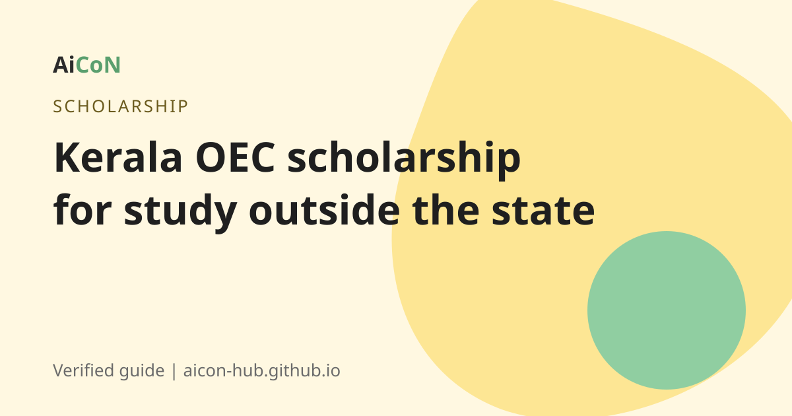

Kerala OEC Post-Matric Scholarship for studying outside Kerala: apply by 30 November 2026
Kerala students in the OEC or OBC(H) category who study in national institutions outside Kerala can apply for this scholarship on the e-Grantz portal. The last date for 2026-27 is 30 November 2026.

What is it?
The OEC Post-Matric Educational Assistance scheme gives educational scholarship to OEC (Other Eligible Communities) students from Kerala. The Backward Classes Development Department (BCDD) page says it covers OEC post-matric students in the state and those who got admission to courses outside the state, including allotment from central agencies. The scheme covers lump sum grant, monthly stipend and legitimate fees for students from +2 to PhD.
The e-Grantz notice (in Malayalam) invites applications from OEC and OBC(H) post-matric students studying in institutions of national importance outside the state. The last date is 30.11.2026.
Who can apply?
- The student must be in the Kerala State OEC list and have got admission through merit or reservation (BCDD page).
- The BCDD page says there is no income limit.
- The student studies from +2 to PhD level, in a course covered by the scheme.
- For the outside-state notice, the institution must be one of national importance, as listed in the notice.
The BCDD page also says to apply within two months after admission. The 2026-27 notice sets 30 November 2026 as the last date. Do not wait for the last day.
How to apply, step by step
- Open the e-Grantz portal: egrantz.kerala.gov.in.
- Complete the One Time Registration (OTR).
- Fill in the student profile and add your qualifications.
- Choose and apply for the scheme you are eligible for.
- Submit the application with documents.
- Track your application status. The portal uses your Aadhaar number and date of birth for tracking.
- The money is paid to your bank account by Direct Benefit Transfer (DBT).
Cost, eligibility and limits
| Cost | Free to apply. |
|---|---|
| Who | OEC (and OBC(H) in the outside-state notice) students from Kerala. |
| Benefit | Lump sum grant, monthly stipend and legitimate fees, per the BCDD page. A fee list in the e-Grantz document sets a ceiling for each type of fee. |
| Last date | 30 November 2026 (e-Grantz notice). |
| Helpline | BCDD: 0471 2727378, bcddkerala@gmail.com (from the BCDD site). |
Stay safe
- Apply only on egrantz.kerala.gov.in. No agent can speed it up.
- Do not pay anyone to fill the form.
Frequently asked questions
What is the last date?
30 November 2026 for the outside-state scheme, according to the e-Grantz notice.
Is there an income limit?
The BCDD scheme page says no limit.
Who is OEC?
Students in the State OEC list. Check your community against the list.
How is the money paid?
Directly to your bank account.
Is Kedavilakku the same scheme?
No. Kedavilakku is a different scheme, and its last date was 30 September 2026, which has passed.
Sources: e-Grantz Kerala, BCDD scheme page, e-Grantz fee ceiling document. Checked 6 October 2026.